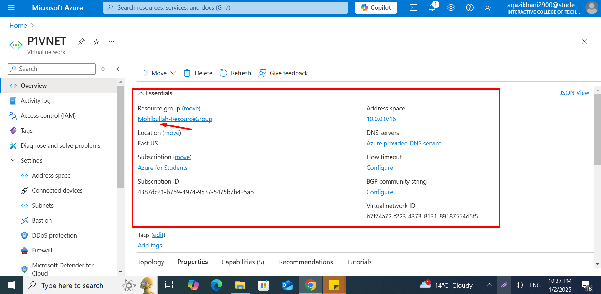
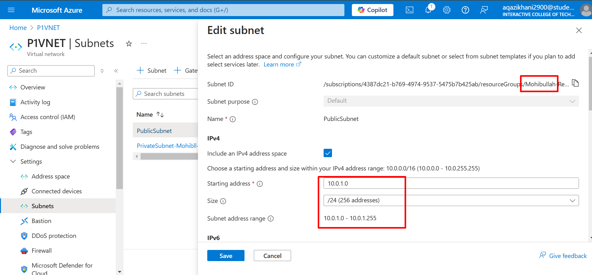
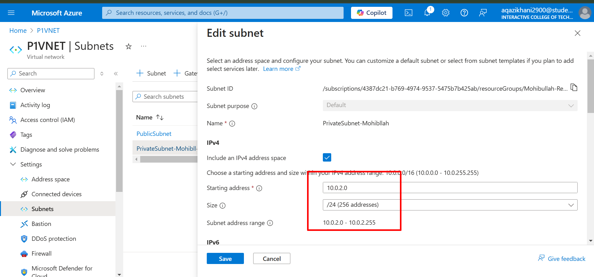
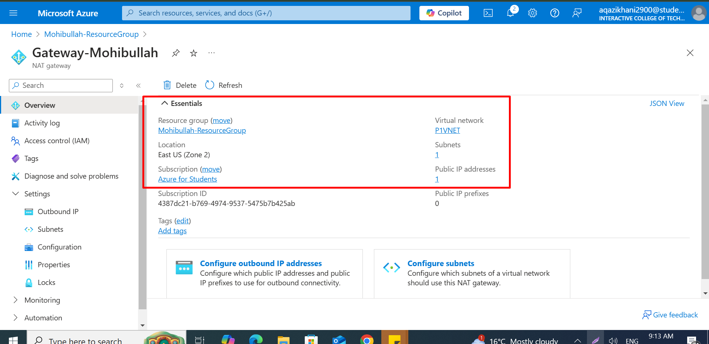
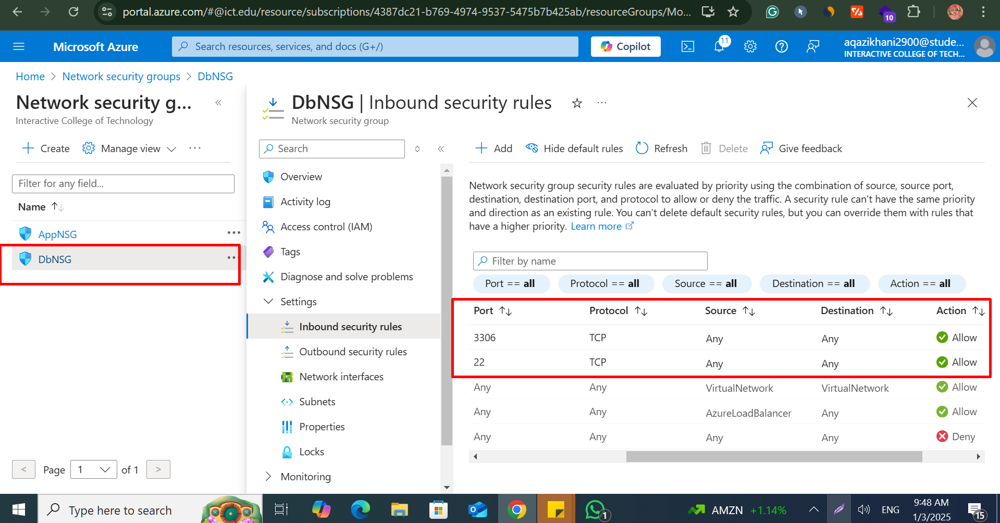
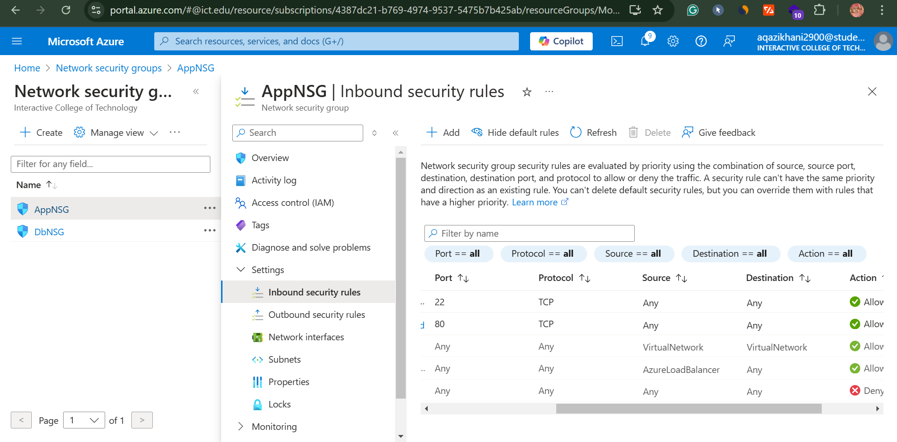
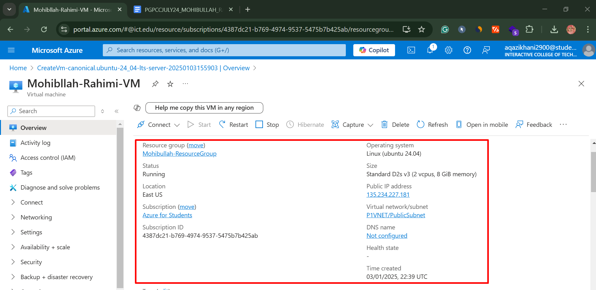
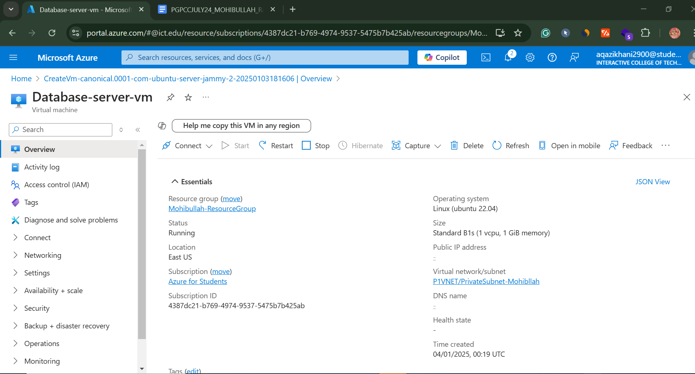
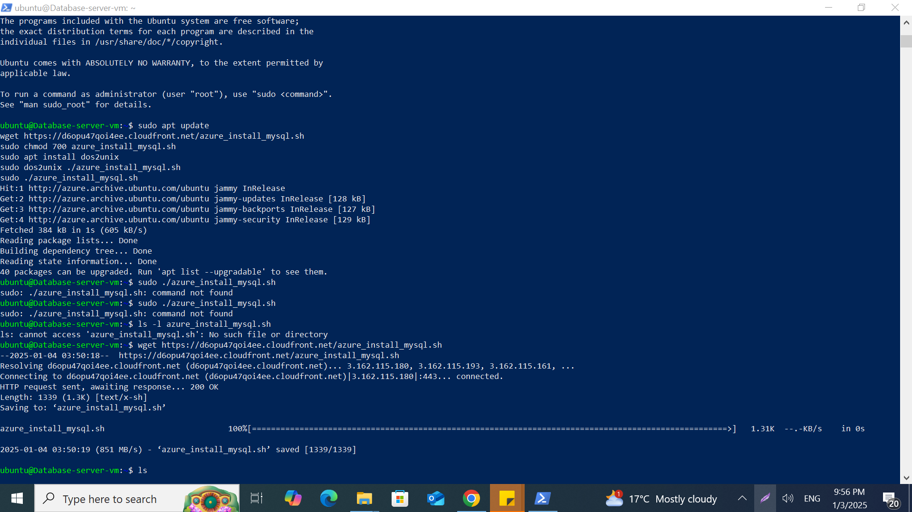
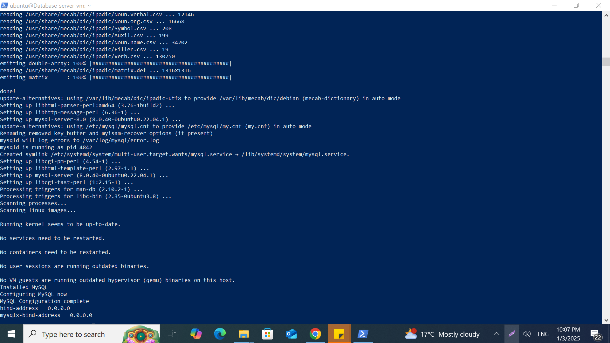

Secure Enterprise File Sharing Solution on Azure
Published: January 2025
By: Mohibullah Rahimi
Technical Stack: Azure Virtual Network, Ubuntu VMs, MySQL, OwnCloud, Network Security Groups
The Critical Need for Secure File Sharing
Recent industry research highlights significant security challenges with current file sharing practices:
- 40-75% of employees routinely use unauthorized services like Dropbox for file sharing, knowingly violating company policies
- Over 40% of organizations have suffered confidential data exposure through these unapproved channels
- The financial impact remains severe, with average breach costs reaching $5.5 million as early as 2011
This solution directly addresses these risks by providing a fully controlled alternative that keeps sensitive data within enterprise-managed infrastructure while maintaining compliance with security policies and regulatory requirements.
Solution Architecture

Figure 1: Comprehensive network architecture showing public and private subnets with security boundaries
Core Architectural Components
Strategic Design Decisions
- Public Subnet (10.0.1.0/24): Hosts the OwnCloud web interface with controlled public access while maintaining backend isolation
- Private Subnet (10.0.2.0/24): Contains the MySQL database with no direct internet exposure, accessible only through specific security rules
- NAT Gateway: Enables secure outbound internet connectivity for private subnet resources without exposing inbound ports
- Bastion Host: Provides the single controlled entry point for administrative access to private resources
Security Considerations
- Strict network segmentation following zero-trust principles
- Least privilege access controls at every layer
- Encrypted communications for all data transfers
- Comprehensive logging and monitoring capabilities
Implementation Guide
Network Infrastructure Setup
Virtual Network Creation
Create the foundational network infrastructure with proper segmentation:
# Create resource group for all components
az group create --name OwnCloud-RG --location eastus
# Establish virtual network with 10.0.0.0/16 address space
az network vnet create \
--name P1VNET \
--resource-group OwnCloud-RG \
--address-prefixes 10.0.0.0/16
# Configure public subnet for frontend services
az network vnet subnet create \
--name public-subnet \
--resource-group OwnCloud-RG \
--vnet-name P1VNET \
--address-prefixes 10.0.1.0/24
# Configure private subnet for database tier
az network vnet subnet create \
--name private-subnet \
--resource-group OwnCloud-RG \
--vnet-name P1VNET \
--address-prefixes 10.0.2.0/24

Network topology after initial configuration

Properties of public subnet

Properties of private subnet
NAT Gateway Implementation
Configure secure outbound connectivity for private subnet resources:
# Create public IP for NAT gateway
az network public-ip create \
--resource-group OwnCloud-RG \
--name nat-gateway-ip \
--sku standard \
--allocation static
# Provision the NAT gateway resource
az network nat gateway create \
--resource-group OwnCloud-RG \
--name owncloud-nat \
--public-ip-addresses nat-gateway-ip
# Associate NAT with private subnet
az network vnet subnet update \
--resource-group OwnCloud-RG \
--vnet-name P1VNET \
--name private-subnet \
--nat-gateway owncloud-nat

NAT gateway attached to private subnet
Security Configuration
Network Security Groups
Implement granular access controls through NSG rules:
Application NSG (Public Subnet)
# Create Application Security Group
az network nsg create \
--resource-group OwnCloud-RG \
--name AppNSG
# Allow HTTP traffic
az network nsg rule create \
--resource-group OwnCloud-RG \
--nsg-name AppNSG \
--name allow-http \
--access Allow \
--protocol Tcp \
--direction Inbound \
--priority 100 \
--source-address-prefix '*' \
--source-port-range '*' \
--destination-address-prefix '*' \
--destination-port-range 80
# Allow HTTPS traffic
az network nsg rule create \
--resource-group OwnCloud-RG \
--nsg-name AppNSG \
--name allow-https \
--access Allow \
--protocol Tcp \
--direction Inbound \
--priority 110 \
--source-address-prefix '*' \
--source-port-range '*' \
--destination-address-prefix '*' \
--destination-port-range 443
# Restricted SSH access
az network nsg rule create \
--resource-group OwnCloud-RG \
--nsg-name AppNSG \
--name allow-ssh \
--access Allow \
--protocol Tcp \
--direction Inbound \
--priority 120 \
--source-address-prefix \
--source-port-range '*' \
--destination-address-prefix '*' \
--destination-port-range 22
Database NSG (Private Subnet)
# Create Database Security Group
az network nsg create \
--resource-group OwnCloud-RG \
--name DbNSG
# Allow MySQL from application subnet only
az network nsg rule create \
--resource-group OwnCloud-RG \
--nsg-name DbNSG \
--name allow-mysql \
--access Allow \
--protocol Tcp \
--direction Inbound \
--priority 100 \
--source-address-prefix 10.0.1.0/24 \
--source-port-range '*' \
--destination-address-prefix '*' \
--destination-port-range 3306
# Restricted SSH access
az network nsg rule create \
--resource-group OwnCloud-RG \
--nsg-name DbNSG \
--name allow-ssh \
--access Allow \
--protocol Tcp \
--direction Inbound \
--priority 110 \
--source-address-prefix \
--source-port-range '*' \
--destination-address-prefix '*' \
--destination-port-range 22

DbNSG security rules configuration for both subnets

Complete AppNSG security rules configuration for subnets
Virtual Machine Deployment
Application Server Configuration
# Deploy Ubuntu VM in public subnet
az vm create \
--name owncloud-app \
--resource-group OwnCloud-RG \
--image Ubuntu2204 \
--size Standard_B2s \
--admin-username azureuser \
--generate-ssh-keys \
--public-ip-address owncloud-public-ip \
--vnet-name P1VNET \
--subnet public-subnet \
--nsg AppNSG

Application Server Overview
Database Server Configuration
# Deploy Ubuntu VM in private subnet
az vm create \
--name owncloud-db \
--resource-group OwnCloud-RG \
--image Ubuntu2004 \
--size Standard_B1s \
--admin-username azureuser \
--generate-ssh-keys \
--public-ip-address "" \
--vnet-name P1VNET \
--subnet private-subnet \
--nsg DbNSG

Database Server Overview
Software Installation
Application and Database Installation and Testing
# Connect to database server via bastion
ssh -i db-key.pem azureuser@10.0.2.4
# Install MySQL server
sudo apt update
wget https://d6opu47qoi4ee.cloudfront.net/azure_install_mysql.sh
sudo chmod 700 azure_install_mysql.sh
sudo apt install dos2unix
sudo dos2unix ./azure_install_mysql.sh
sudo ./azure_install_mysql.sh
# Secure MySQL installation
sudo mysql_secure_installation
# Configure database for OwnCloud
mysql -u root -p
CREATE DATABASE owncloud;
CREATE USER 'ownclouduser'@'10.0.1.%' IDENTIFIED BY 'SecureP@ss123!';
GRANT ALL PRIVILEGES ON owncloud.* TO 'ownclouduser'@'10.0.1.%';
FLUSH PRIVILEGES;
EXIT;

MySQL Installation Process
OwnCloud Application Installation
# Connect to application server
ssh -i app-key.pem azureuser@
# Install dependencies
sudo apt update
sudo add-apt-repository ppa:ondrej/php -y
sudo apt update
sudo apt install -y apache2 libapache2-mod-php7.4 openssl wget \
php7.4 php7.4-mysql php7.4-gd php7.4-mbstring php7.4-xml
# Configure Apache
sudo a2enmod rewrite
sudo systemctl restart apache2
# Install OwnCloud
cd /var/www/html
sudo wget https://download.owncloud.com/server/stable/owncloud-complete-latest.tar.bz2
sudo tar -xjf owncloud-complete-latest.tar.bz2
sudo chown -R www-data:www-data owncloud
sudo systemctl restart apache2

OwnCloud Installation
Testing and Validation
Functional Testing
- Web Interface Access:
- Navigate to http://[APP_SERVER_IP]/owncloud
- Verify proper loading of login page
- Complete initial setup wizard
- Database Connectivity:
- Confirm successful database connection during setup
- Verify creation of initial tables in MySQL
- File Operations:
- Upload test files of various sizes
- Download previously uploaded files
- Verify file integrity after transfer
Security Validation
- Network Isolation:
- Attempt direct SSH to database server from external network (should fail)
- Verify MySQL port (3306) is not accessible from public internet
- Access Controls:
- Confirm only HTTPS traffic is allowed (port 443)
- Validate private subnet resources have no public IP addresses
- Data Protection:
- Verify encrypted connections to web interface
- Confirm database communications are secured
Expected Results
- OwnCloud web interface fully functional with all features accessible
- Database operations working correctly but inaccessible from external networks
- All network traffic properly routed through configured security groups
- Private subnet resources only accessible through designated secure channels
- System meets all specified security and compliance requirements
Conclusion and Business Value
This comprehensive implementation delivers a secure enterprise file sharing solution that directly addresses the risks of unauthorized cloud storage usage while providing:
Enhanced Security
- Eliminates shadow IT by providing approved alternative
- Maintains complete data sovereignty
- Reduces breach risks through proper segmentation
Regulatory Compliance
- Meets HIPAA, GDPR, and other requirements
- Provides detailed audit capabilities
- Enables data residency controls
Operational Efficiency
- Centralized management of file sharing
- Familiar user experience for adoption
- Scalable Azure infrastructure
Future Enhancement Opportunities
Azure AD Integration
Implement enterprise identity management for:
- Single sign-on (SSO)
- Centralized user provisioning
- Conditional access policies
High Availability
Enhance reliability through:
- Load balanced application tier
- Database replication
- Multi-region deployment
Advanced Monitoring
Implement comprehensive observability:
- Azure Monitor integration
- Custom performance metrics
- Security alerting
This solution represents a robust alternative to uncontrolled public cloud storage, providing organizations with the perfect balance of security, control, and usability. By implementing OwnCloud with a private MySQL database on Azure, enterprises can finally eliminate risky shadow IT practices while delivering a secure, compliant file sharing platform that meets both user needs and organizational security requirements.
The architecture demonstrates practical application of zero-trust principles in a real-world Azure deployment, serving as a model for securing other enterprise applications with similar requirements.